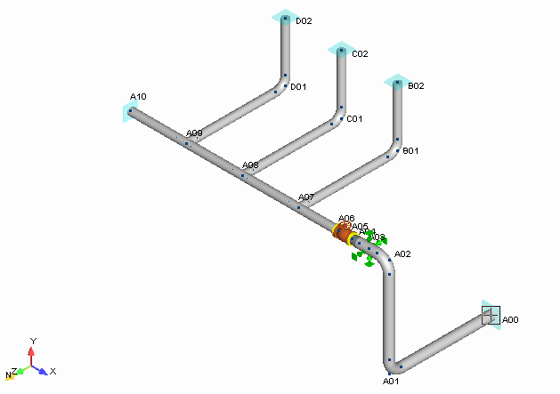

Overview
In this chapter, you will build the first of two tutorial models. Each step of the model creation process is discussed, and various model construction techniques are introduced. At the completion of this chapter, you will have built the model shown below:
